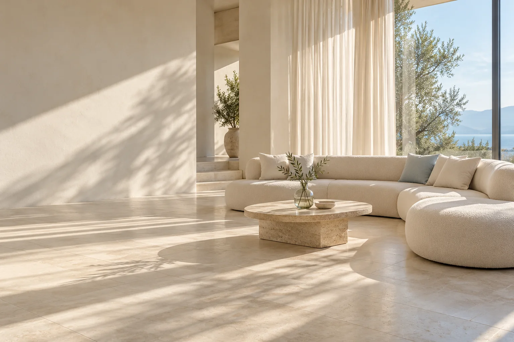
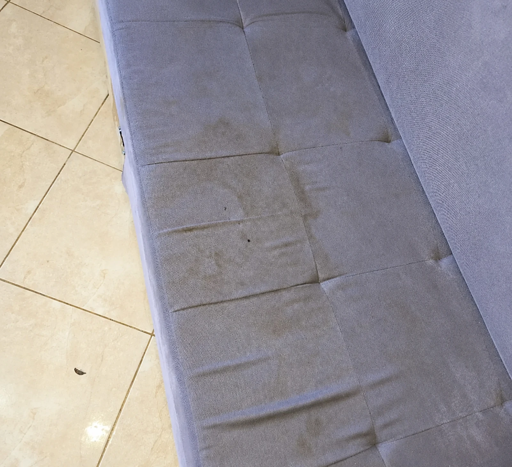
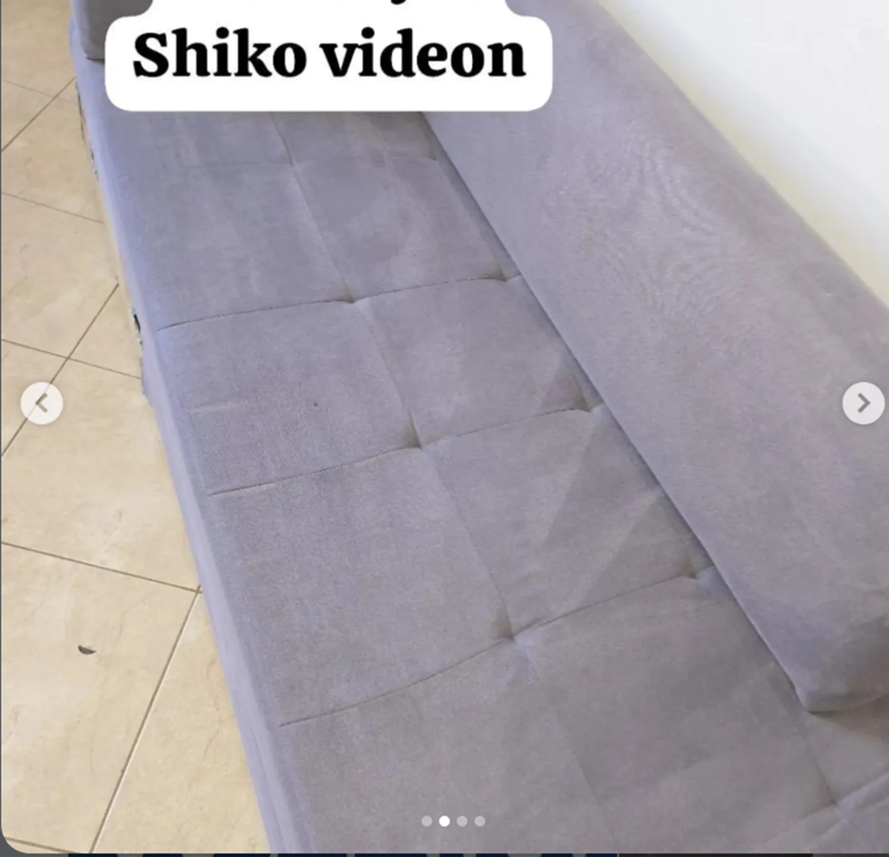

Shërbime pastrimiprofesionale.
Për shtëpi dhe biznese në Tiranë, me makineri profesionale dhe solucione ekologjike.
Çfarë po pastroni?
Këndi ku rrini.
Freskia që doni.
Vendi i bisedave, pushimit dhe kohës me familjen meriton kujdes. Larja e këndeve dhe divaneve në Tiranë është në qendër të punës sonë.
- 01
Larje e thellë
Me makineri dhe aparatura profesionale.
- 02
Trajtim i njollave
Sipas llojit të njollës dhe gjendjes së materialit.
- 03
Thithje me vakum
Për largimin e papastërtive nga tapiceria.
- 04
Solucione ekologjike
Produkte larëse të përzgjedhura për shërbimin.
- 05
Procese të përshtatura
Kujdes sipas gjendjes dhe llojit të copës.
- 06
Freski për ambientin
Për një kënd të pastër dhe më të këndshëm.
Çmimi dhe koha e tharjes konfirmohen sipas madhësisë, materialit dhe kushteve të ambientit.
Ndryshimi
shihet.
Rezultate nga larja e tapicerive. Një ambient më i freskët fillon nga detajet që përdorni çdo ditë.
Edhe këndi juaj meriton kujdes

Pastërti për
çdo ditë.
Nga këndi i ndenjjes te dysheku, tapeti dhe karroca e fëmijës. Zgjidhni shërbimin që ju duhet.
Produkte dhe procese të zgjedhura sipas gjendjes dhe materialit.
01Larje këndesh & divanesh
Kujdes i thellë për këndin apo divanin tuaj: larje me aparatura profesionale, trajtim i njollave dhe thithje e papastërtive, sipas materialit.
Kërko çmim02Larje dyshekësh & kokash krevati
Larje dyshekësh dhe kokash krevati me tapiceri. Trajtim i përshtatur për materialin dhe gjendjen e sipërfaqes.
Kërko çmim03Larje kolltuqesh & karrigesh
Larje kolltuqesh dhe karrigesh të veshura me copë, për shtëpinë, zyrën apo ambientin tuaj të biznesit.
Kërko çmim04Larje tapetesh, moketesh & rrugicash
Larje tapetesh, moketesh dhe rrugicash me makineri profesionale.
- Shkundje & larjeShkundje me makineri robotike, pastaj larje me ujë dhe solucion profesional.
- Shtrydhje & tharjeLargim deri në 80% të ujit; tharje natyrale ose në dhomë tharjeje, sipas motit.
- Paketim & aromëPaketim dhe aromatizim në përfundim.
05Larje karrocash fëmijësh
Kujdes për pastërtinë e tapicerisë së karrocave të fëmijëve, me larje dhe higjienizim të përshtatur për materialin.
Kërko çmim06Pastrim ambientesh & xhamash
Pastrim apartamentesh, shtëpish dhe ambientesh biznesi; larje xhamash dhe pastrim pas rikonstruksionit, sipas kërkesës.
Kërko çmimI njëjti kujdes.
Çdo material.
Dyshekë, koka krevati, kolltuqe, karrige dhe karroca fëmijësh. Na tregoni çfarë doni të lani; ne përcaktojmë trajtimin e përshtatshëm.
Kërko çmimDyshekë & koka krevati
Larje dhe higjienizim për tapiceritë e dhomës së gjumit.
Karrige & kolltuqe
Kujdes për mobiliet që përdorni çdo ditë.
Karroca fëmijësh
Larje e përshtatur sipas materialit dhe gjendjes.
Tapete, mokete & rrugica
Larje profesionale për sipërfaqe të ndryshme tekstili.
Produkti dhe procesi i larjes përshtaten sipas materialit.
Shtëpia juaj.
Kujdesi ynë.
Kompani Pastrimi Tirana ofron shërbime profesionale larjeje dhe pastrimi. Nga këndet dhe divanet te dyshekët dhe ambientet, punojmë me makineri profesionale dhe solucione ekologjike.
Fokus te tapiceritë
Larje këndesh, divanesh dhe mobiliesh të veshura me copë.
Kujdes për materialin
Produktet dhe procesi përshtaten sipas gjendjes së sipërfaqes.
Kontakt i drejtpërdrejtë
Na dërgoni një foto në WhatsApp për të diskutuar shërbimin dhe çmimin.
Kujdesi duket
në çdo hap.
Nga afër me pastrimin profesional të tapicerive.
Më shumë në InstagramKujdes në çdo detaj
Kompani Pastrimi Tirana
Larje profesionale
Kompani Pastrimi Tirana
Freski për tapicerinë
Kompani Pastrimi Tirana
Nga puna jonë
Kompani Pastrimi Tirana
Video referencë
Pyetje të
shpeshta.
Keni një pyetje tjetër? Na shkruani dhe e diskutojmë së bashku.
Na pyesni në WhatsAppSi mund të rezervoj larjen e këndit?
Na shkruani në WhatsApp ose telefononi 069 98 13 229. Dërgoni një foto të këndit dhe na tregoni vendndodhjen. Mund të përdorni edhe formularin më poshtë.
Si përcaktohet çmimi?
Çmimi varet nga madhësia, materiali, gjendja dhe shërbimi i kërkuar. Foto ose video na ndihmojnë të diskutojmë çmimin më saktë.
Sa kohë duhet të thahet tapiceria?
Koha e tharjes varet nga materiali, sasia e lagështisë dhe ajrosja. E diskutojmë sipas ambientit dhe shërbimit që do të kryhet.
Çfarë produktesh përdorni?
Përdorim solucione ekologjike dhe produkte larëse të përzgjedhura sipas materialit dhe gjendjes së tij.
A lani dyshekë dhe karroca fëmijësh?
Po. Ofrojmë edhe larje dyshekësh, kokash krevati, karrocash fëmijësh, karrigesh, kolltuqesh, tapetesh, moketesh dhe rrugicash.
A ofroni pastrim ambientesh?
Po, ofrojmë pastrim apartamentesh, shtëpish dhe ambientesh biznesi, larje xhamash dhe pastrim pas rikonstruksionit. Na tregoni nevojën tuaj.
A konfirmohet rezervimi nga formulari?
Formulari përgatit mesazhin në WhatsApp. E dërgoni ju; çmimi, data dhe orari konfirmohen më pas me ekipin.
Pastërti që
lë përshtypje.
Përvoja juaj ka rëndësi.
Përshtypjet e klientëve do të shfaqen së shpejti këtu.
Një foto.
Një fillim i freskët.
Na tregoni çfarë doni të lani dhe ku ndodheni. Në WhatsApp mund të dërgoni edhe foto të këndit apo tapicerisë suaj.
069 98 13 229